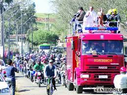

A festa de São Cristóvão é realizade pela Igreja Católica Nossa Senhora da Luz (Padroeira da cidade) a mais de 72 anos, sendo então a mais antiga festa dos Caminhoneiros do Brasil. Ela ocorre no mês de Julho e tem como principais atrações a procissão e benção dos veículos, assim como venda de churrasco e porções, sonhos e pastéis.
|  |
|---|
O evento acontece todo ano no mês de Julho em comemoração ao aniversário da cidade, e conta também como diversas atrações nos 3 dias de festa.
Acontece anualmente na Sexta-feira santa, no Estádio Municipal Abrahm Nagib Nejm, a encenação da Ressurreição de Cristo e algumas cenas de sua vida. É coordenado pelo grupo de teatro São Franscisco de Assis e conta com participantes de Rio Azul e Guarapuava.
Vídeo completo da última encenação.A mais tradicional festa da cidade acontece ao final de novembro, inicio de dezembro, todo ano. Além de diversas bancas de venda de pessêgos de trodutores locais, a festa conta com um cronograma completo de atrações, como shows, parques, escolha de Miss, dentre outras.
O pêssego é um produto agrícola tradicional, cultivado há mais de 41 anos em Irati. Passou a ter o seu reconhecimento pelo município a partir de 1977, quando aconteceu a 1ª edição da Festa do Pêssego. Desde então, a adoção de novas tecnologias vem proporcionando bons rendimentos em produtividade e lucratividade. O incentivo à produção de pêssego na região resulta em aumento no volume de negócios, agregando valor à economia municipal e regional.